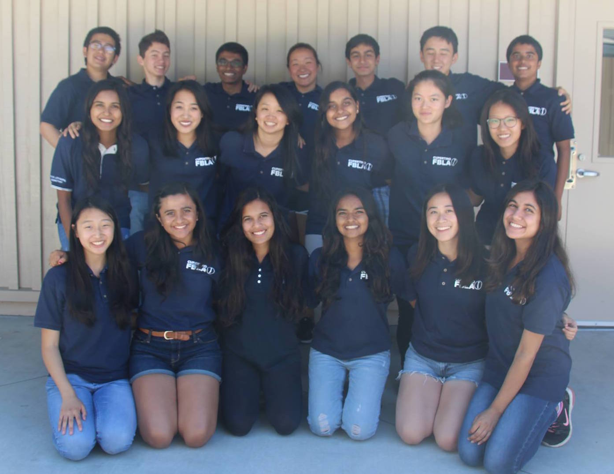
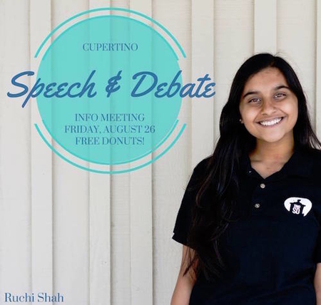
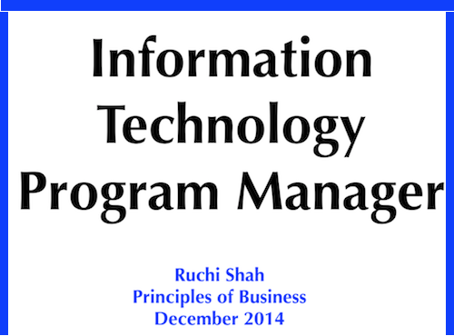
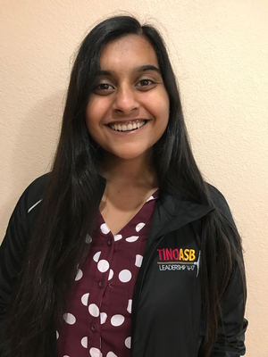
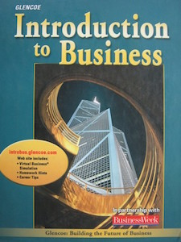

Career-Related Education
The various courses and activities that have prepared me for a career in program management.
School Activities
Local FBLA Chapter Involvement
- Chapter President (2017 - 2018)
- In the upcoming school year, I will be serving as my chapter's President. After 6 years of dedication and involvement in FBLA I finally have been given the opportunity to conclude my last year in FBLA by serving as President to lead my chapter to sucess. I will be in charge of hosting weekly member and officer meetings and supervising a 20-person officer team. I can't wait to see the achievements and the goals I reach throughout next school year.
- Competitions Officer (2016 - 2017)
- This position has allowed for me to learn how to lead about 300 Cupertino FBLA members to section, state, and national level competitions. Throughout this leadership occupation, I have been able to lead weekly study sessions, mock-competitions, and speak in front of a large audience of competitors. All the competitors rely on me for further guidance in their competitions and providence of resources. With this experience, I have developed thorough leadership skills as well as organizational skills.
- Upcycling Treasurer (2016 - 2017)
- As a treasurer of Upcycling, a current club on campus, I have gained a lot of experience in administering budgets and supervising money accounts. In order to raise money for materials and activities, I held many fundraisers to gain money for our club. These fundraisers include: Krispy Kreme, Pieology, and selling corsages and boutonnieres for Junior Prom. This experience has allowed for me to learn how to monitor money and thus is beneficial to my career as a program manager as I will have experience in the administering budgets aspect of it.
- Speech & Debate Original Oratory Captain (2015 - 2016)
- As the original oratory captain, I have developed excellent written and oral skills which are crucial abilities needed for the program manager occupation. I personally attend tournaments and gave ten minute self-written memorized speeches and trained 15-20 other Speech & Debate members for tournaments. This occupation allowed for me to become a better writer and speaker as well as gain leadership skills.
- Girls Who Code Founder (2015 - Present)
- After establishing the first-ever Girls Who Code chapter at Cupertino High School, I have definitely gained both the leadership and technological skills needed to be an IT Program Manger. By working with other girls every other week to go over material, and practice coding, I have become more adept to programs like Java, HTML, etc. I believe that this will be helpful for my future as an IT Manager because it has helped me develop a concrete background in the technology and computer science field.
Other Helpful Leadership Positions

Career Research Project
View the Career Research Project from my Principles of Business class from Freshmen year.

Business Education & Occupational Skills
There are many classes and course that I have taken throughout my high school journey which would be beneficial education for my career as a program manager.

ASB/Leadership & Teamwork - (Grade: A)
Principles of Business - (Grade: A)
Introduction to Java - (Grade: A)

AP Computer Science A - (Grade: A)
World Literature - (Grade: A)
American Literature - (Grade: A)
Visit the rest of my Portfolio!
Next: Learn about my educational enhancement. Next: Learn the about some of my special skills.